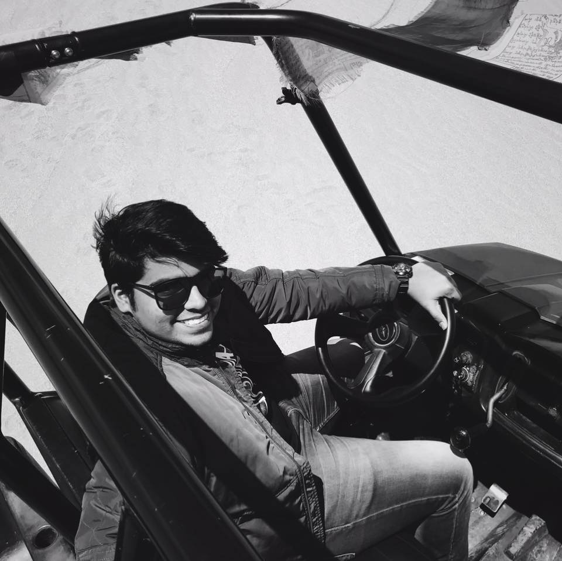

Shourya Shukla,19
Sophomore, Computer Science And Engineering
IIT Roorkee.
Born and raised in Delhi, I did my Alma Mater from Sri Venkateshwar international School in New Delhi.
I am a programming enthusiast and have been programming since grade 11.
In love with C++, JavaScript and Python. Love to read books and watch Anime!